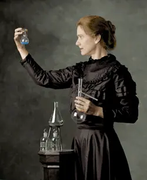

Marie Curie

Marie Curie in her laboratory — Public domain
Marie Curie (1867–1934) was a Polish-born physicist and chemist whose pioneering research laid the foundations of modern nuclear science.
She was the first woman to win a Nobel Prize, the only person to win Nobel Prizes in two different scientific fields, and the first woman to become a professor at the University of Paris.
Key Contributions
- Discovered the chemical elements polonium and radium
- Developed the theory and techniques of radioactivity
- Pioneered the use of radiation in medicine
- Established the first mobile radiology units during World War I
Timeline
1867 — Born in Warsaw, Poland
1898 — Discovered polonium and radium
1903 — Won the Nobel Prize in Physics
1911 — Won the Nobel Prize in Chemistry
1934 — Died in France from aplastic anemia
Why She Matters
Marie Curie transformed science through persistence, curiosity, and courage. Her work not only advanced physics and chemistry but also proved that women belong at the very center of scientific discovery.
References
- Nobel Prize — Marie Curie Biography: nobelprize.org
- Britannica — Marie Curie: britannica.com